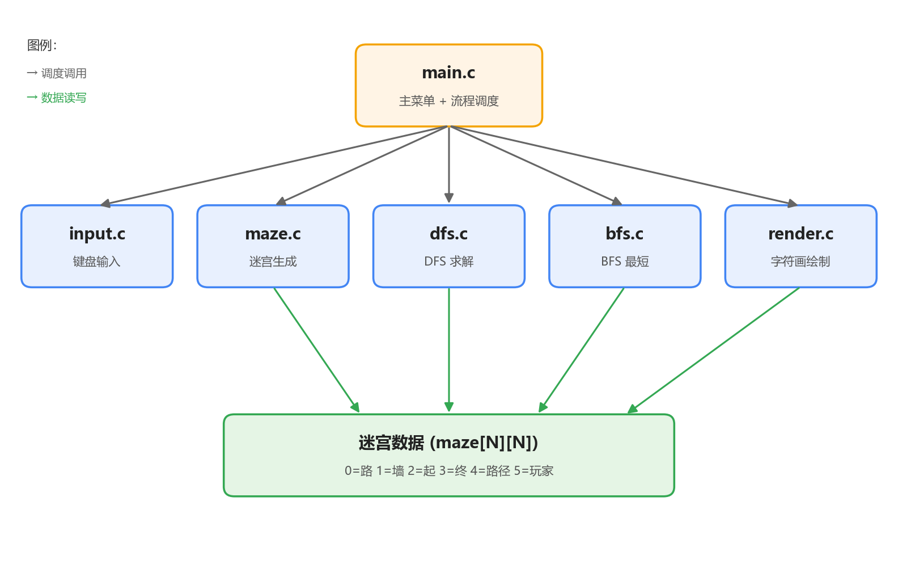
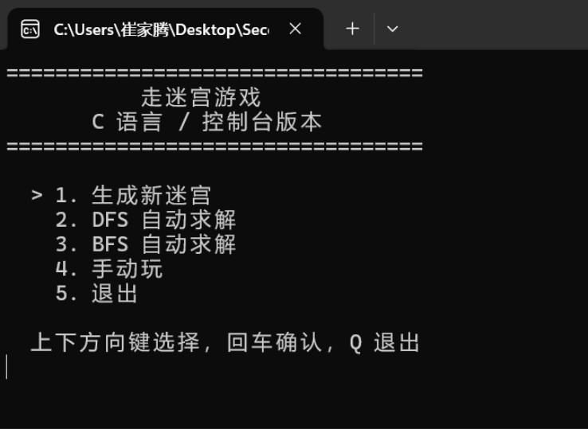
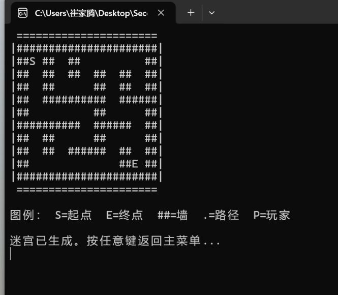
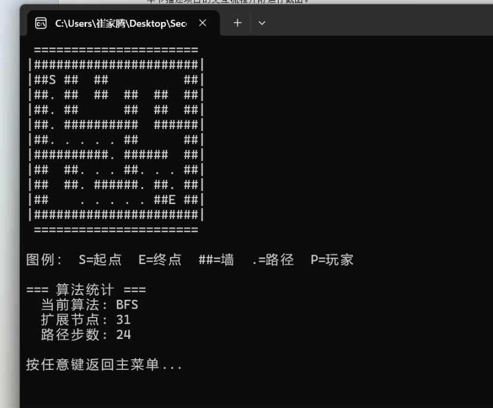
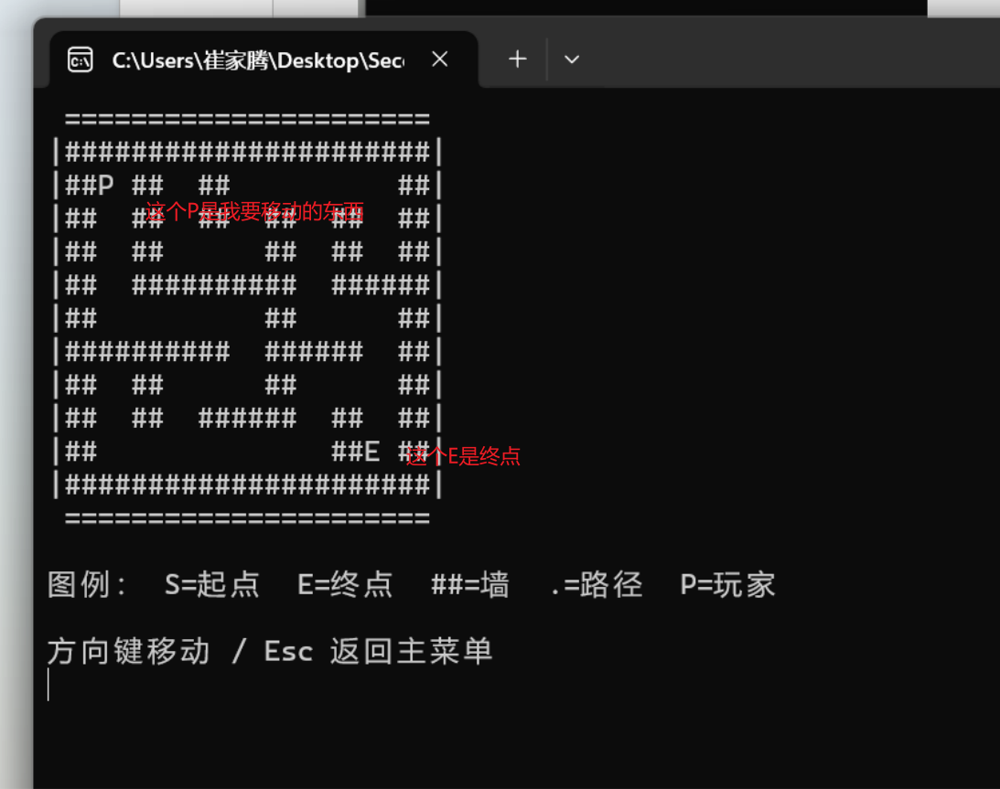
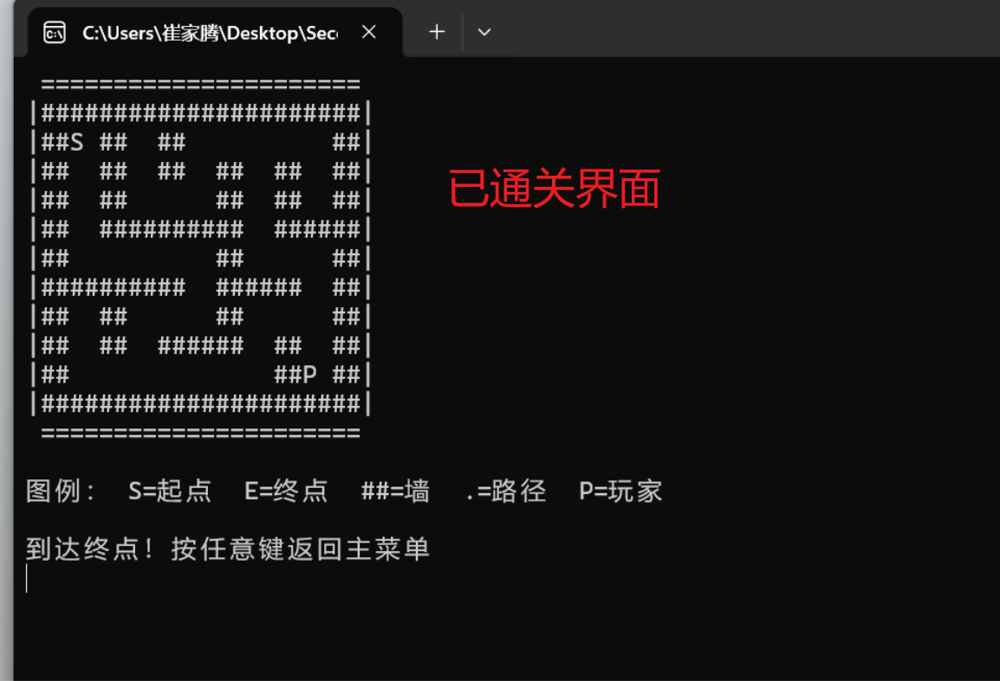

本项目是一个纯 C 语言编写、运行于 Windows 控制台的走迷宫游戏。程序以字符画的方式实时绘制迷宫，集成了迷宫自动生成、DFS 深度优先求解、BFS 广度优先最短路径求解三个核心算法，并支持玩家用方向键手动闯关。整个程序按模块拆分为 6 个源文件，仅依赖标准库与 conio.h，使用 gcc *.c -o maze.exe 即可一键编译，无需 EasyX 等任何图形库。
递归回溯 + Fisher-Yates 随机方向，每次生成不重复的连通迷宫
DFS 找通路、BFS 求最短路，实时统计扩展节点数与路径步数
方向键移动、撞墙不动，到达终点判定通关
小 11×11 / 中 21×21 / 大 31×31 自由切换
程序采用「主控调度 + 数据中心」结构：main.c 负责菜单与流程调度，各功能模块通过共享的迷宫数组 maze[N][N] 协作（实线为调度调用、绿线为数据读写）。

| 模块 | 职责 | 关键技术 |
|---|---|---|
main.c | 程序入口、主菜单、流程控制、模块调度 | 状态机式菜单循环 |
maze.c / .h | 迷宫数据结构 + 迷宫生成 | 递归回溯、Fisher-Yates 洗牌 |
dfs.c / .h | 深度优先求解（找通路） | 递归 DFS |
bfs.c / .h | 广度优先求最短路径 | 数组模拟队列 + 父节点回溯 |
render.c / .h | 控制台字符画绘制（迷宫格 / 菜单 / 状态栏） | ANSI 控制台输出 |
input.c / .h | 键盘输入（方向键 / 回车 / Esc / Q） | conio.h 非阻塞读键 |
先把整个网格填满墙，从起点 (1,1) 出发，随机打乱四个方向，每次向「两步远」的未访问格打通（同时打通中间格），走不通则回溯。保证生成的迷宫连通且唯一通路丰富。
从起点递归向四邻探索，先走到底再回溯，找到终点即标记路径。实现简单，能找到一条可行路径（不保证最短）。
用数组模拟队列逐层扩展，记录每个格子的父节点；到达终点后沿父节点表倒推回起点，得到的即为最短路径。状态栏实时显示扩展节点数与路径步数，可与 DFS 直观对比。





仅依赖 MinGW-w64 GCC（无需 EasyX）。在 code\ 目录下：
# 编译（推荐带优化与警告） gcc -Wall -O2 *.c -o maze.exe # 运行 .\maze.exe
| 场景 | 按键 |
|---|---|
| 主菜单 / 难度选择 | ↑↓ 选择，回车确认，Q 退出 |
| 手动玩 | ↑↓←→ 移动，撞墙不动，Esc 返回菜单 |
| 自动求解 | 进入后等待绘制，状态栏显示算法 / 扩展节点 / 路径步数 |
通路 · ##墙 · S起点 · E终点 · .路径 · P玩家📦 GitHub 仓库：github.com/modestteng/Programming-Practice-by-Teacher-Le-Yie-Yi
🎬 演示视频：见提交包内 演示视频.mp4（主菜单→生成→DFS→BFS→手动玩全流程）
📄 分组报告：见提交包内 24115248 崔家腾 程序设计综合实践分组报告.docx